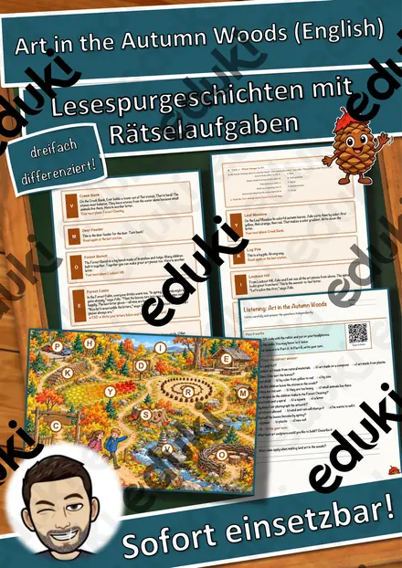
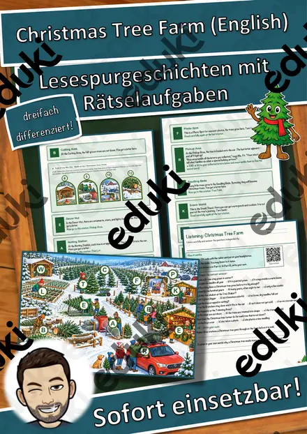
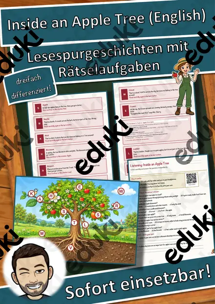
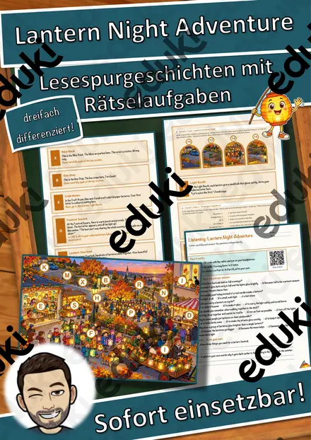
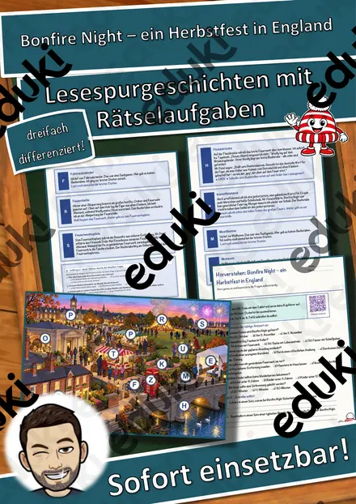
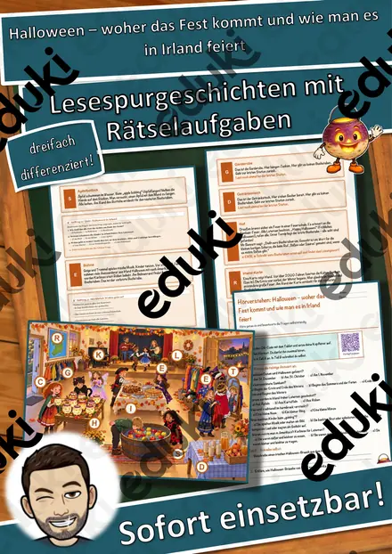
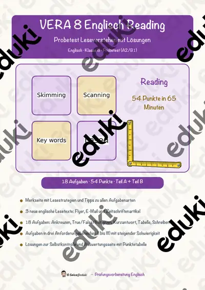

Lunar New Year at Lin's Home – Lesespurgeschichte mit Rätselaufgaben auf Englisch (Klasse 8)
Schick deine Klasse auf eine Lesespur durch das Zuhause von Lin! In der englischen Geschichte „Lunar New Year at Lin's Home“ wird eine Schülerin bzw. ein Schüler zum ersten Mal zu Freundin Lin eingeladen, um das Lunar New Year (chinesisches Neujahr, Mondneujahr) zu feiern. Die Lernenden begleiten den Besuch: von der Front Door (Haustür) über Broom Closet (Besenkammer), Living Room (Wohnzimmer), Calendar Wall (Kalenderwand), Kitchen (Küche), Dining Table (Esstisch) und Balcony (Balkon) bis ins Courtyard (Innenhof). Am Ende jedes kurzen Lesetextes verrät ein Hinweis den nächsten Ort auf dem Plan. Wer genau liest, findet den Weg, sammelt an jeder richtigen Station einen Buchstaben und stellt die Buchstaben zum geheimen Lösungswort um – wie ein Escape Room auf Papier.
Die passende Lesespur für den Englischunterricht ab Klasse 8, im bilingualen Unterricht (CLIL) und für Herkunftssprachler auch früher. Ideal im Winter, im Januar und Februar, zum Thema Lunar New Year, für Stationenlernen, Freiarbeit, schnelle Lernende oder Vertretungsstunden. Geeignet für Mittelschule, Realschule, Gymnasium und Gesamtschule. Das Material ist SOFORT EINSETZBAR: Außer dem Drucken ist keine Vorbereitung nötig, das Laminieren des Plans ist optional. Es ist in DREI DIFFERENZIERUNGSSTUFEN angelegt (leicht ★ / mittel ★★ / schwer ★★★) – gleiche Geschichte, gleicher Plan, sodass in einer Klasse differenziert werden kann.WICHTIG: Das komplette Material ist sowohl in FARBE (24 Seiten, inklusive Deckblatt auf Seite 1) als auch in SCHWARZ-WEISS (24 Seiten, ebenfalls inklusive Deckblatt) enthalten – ideal zum Sparen von Druckkosten. Einzelne Illustrationen wurden mit KI-Werkzeugen erstellt und von der Autorin bzw. dem Autor geprüft.DAS IST ENTHALTEN
- Lesespurgeschichte in 3 Niveaus (★ leicht, ★★ mittel, ★★★ schwer)
- Plan des Zuhauses im Querformat als ganzseitige Suchkarte mit Buchstaben-Feldern
- Hörverstehen: QR-Code im PDF zur MP3-Aufnahme, dazu Multiple-Choice-Fragen und offene Fragen
- drei integrierte Aufgaben: Zuordnung (matching), Quiz sowie ein Rätsel; dazu eine Mathe-Sachaufgabe mit Bildtoren
- Rätselseite (Wörter-Suchsel + kurze Fragen zum Leseverstehen)
- Ausmalbild zum Thema
- Teacher Guide (Standards, Vorbereitung, Zeitplanung, Ablauf Schritt für Schritt, Ideen zur Weiterarbeit) und vollständiger Answer Key (Lösungsblatt für die Lehrkraft)
- alles zusätzlich als komplette Schwarz-Weiß-VarianteSO FUNKTIONIERT DIE LESESPURDie Schülerinnen und Schüler lesen ab dem Start, finden im Text den nächsten Ort, suchen ihn auf dem Plan und lesen an dieser Station weiter. An jeder richtigen Station gibt es einen Buchstaben. Eingeplante Sackgassen sind keine Stationen und dienen der Selbstkontrolle: Landet jemand dort, wurde ein Hinweis falsch gelesen. Am Ende werden die gesammelten Buchstaben umgestellt und ergeben ein geheimes Lösungswort. (Die Lösungen sind selbstverständlich nur im Lösungsblatt für die Lehrkraft enthalten.) Zeitbedarf: etwa 90 Minuten, auch auf zwei Unterrichtsstunden aufteilbar.INHALTLICHER SCHWERPUNKTDer erste Besuch bei einer Freundin zur Lunar-New-Year-Feier, erkundet an Lesestationen in Wohnung und Innenhof: Front Door, Broom Closet, Living Room, Calendar Wall, Kitchen, Dining Table, Balcony und Courtyard. Dazu kommen Aufgaben zu Zuordnung, Quiz, Rätsel und Rechnen sowie das Kennenlernen einer fremden Festkultur.SPRACHNIVEAUAuthentisches amerikanisches Englisch, ursprünglich für Grade 5–6 geschrieben, sprachlich etwa A2/B1 und daher ab Klasse 8 gut lesbar. Auch das Wörter-Suchsel und der Hörtext sind auf Englisch. Das Lösungsblatt für die Lehrkraft ist ebenfalls auf Englisch.ABGEDECKTER LEHRPLAN (Klasse 8)
- Englisch – Leseverstehen: Texten gezielt Schlüsselinformationen entnehmen, Zusammenhänge zwischen Ideen und Ereignissen erkennen, schriftlichen Anweisungen folgen.
- Englisch – Hörverstehen: einer Aufnahme (MP3) Informationen entnehmen und Fragen dazu beantworten.
- Englisch – Wortschatz: unbekannte Wörter aus dem Kontext erschließen, Themenwortschatz festigen.
- Englisch – interkulturelles Lernen: ein Fest einer anderen Kultur kennenlernen, darüber sprechen und ihm respektvoll begegnen.
- Gesellschaftswissenschaftlicher Bezug (Social Studies/Ethik): Feste und Familienleben in anderen Kulturen.
- Mathematik – Textaufgabe im Sachzusammenhang lösen.
Geeignet für Freiarbeit, Stationenlernen, Vertretungsstunden, Wochenplan, schnelle Lernende und als Einstieg ins Thema Lunar New Year.LEHRPLANBEZUG
- Englisch, Sekundarstufe I (Englisch Jgst. 5–10): LehrplanPLUS Bayern und Bildungsstandards der KMK für die erste Fremdsprache – kommunikative Kompetenzen Leseverstehen, Hör-/Hörsehverstehen (Audio per QR-Code) sowie Verfügen über sprachliche Mittel (Wortschatz).
- Niveau etwa GeR A2–B1; geeignet für Englischunterricht, bilingualen Sachfachunterricht (CLIL), Vertretung und Freiarbeit.
Ähnliche Materialien

The Apple Cellar – Lesespurgeschichte mit Rätselaufgaben auf Englisch (Klasse 6)

The Quiet Snowy Forest – Lesespurgeschichte mit Rätselaufgaben auf Englisch (Klasse 6)

Christmas Tree Farm – Lesespurgeschichte mit Rätselaufgaben auf Englisch (Klasse 6)

Inside an Apple Tree – Lesespurgeschichte mit Rätselaufgaben auf Englisch (Klasse 9)

Lantern Night Adventure – Lesespurgeschichte mit Rätselaufgaben auf Englisch (Klasse 7)

Bonfire Night – ein Herbstfest in England – Lesespurgeschichte mit Rätselaufgaben (Klasse 7)

Halloween – woher das Fest kommt und wie man es in Irland feiert – Lesespurgeschichte mit Rätselaufgaben (Klasse 3)
